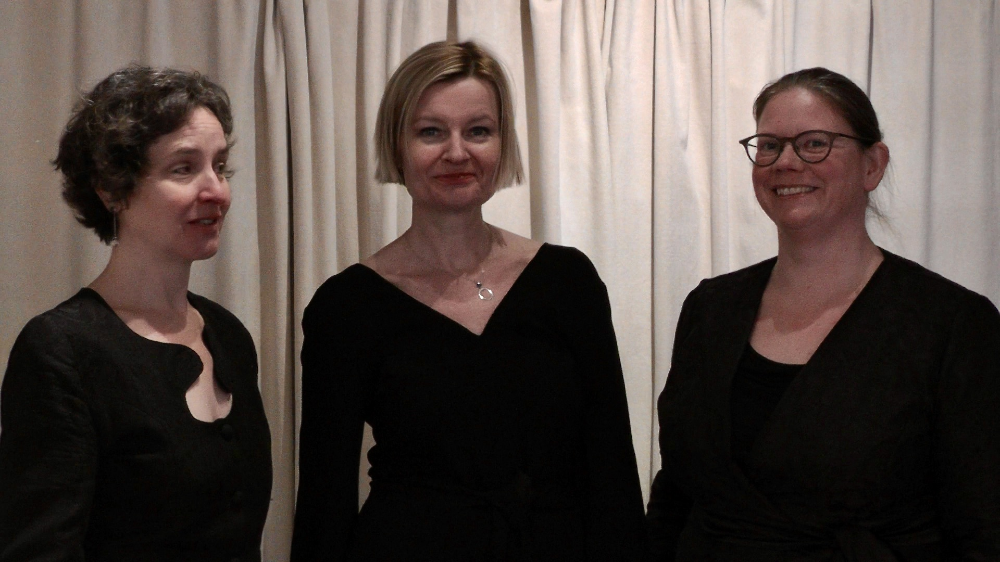

Anime Beatitudinis Cantando
Anime Beatitudinis Cantando is een professioneel vrouwenensemble dat op een zinneprikkelende manier de muziek van de middeleeuwen en vroege renaissance nieuw leven inblaast. De programma’s onderscheiden zich door eigenzinnige, creatieve en interdisciplinaire totaalconcepten, waarbij de zichtbare en hoorbare liefde voor deze muziek wordt gecombineerd met teksten en beelden, soms ook andere zintuigelijke middelen, die gezamenlijk een verhaal vertellen.
De klank en interpretatie van de muziek door Anime Beatitudinis Cantando kenmerkt zich door het vloeiend volgen van de originele notatie, aandacht voor het dialect en de tongval, aandacht voor de modale harmonie en akoestische effecten en bijgevolg het reageren op wat de muziek van de zangeressen wil (en dus niet andersom). Dit resulteert in een levendige uitvoering met verrassende samenklanken, die optimaal tot hun recht komen in de ruimte waar de voorstelling plaatsvindt.
De naam Anime Beatitudinis Cantando is Latijn voor “zingen in de ziel van gelukzaligheid”. Dit geeft uitdrukking aan de intentie die muziek uit de periode van de middeleeuwen en vroege renaissance vaak impliciet lijkt te hebben: verbinding van de ziel met de ander en met het hogere. Maar ook aan het gevoel dat zingen bij de zangeressen teweeg kan brengen, en hopelijk ook bij het publiek. Immers, de gelukkige ziel zingt en de zingende ziel is gelukkig!
Vaste kernleden van het ensemble zijn de zangeressen Cora Schmeiser, Agnieszka Chabowska en Marsja Mudde. Afhankelijk van het programma kunnen andere zangeressen of instrumentalisten aan het ensemble worden toegevoegd.
Anime Beatitudinis Cantando heeft tot doel om haar publiek - bewust of ongemerkt - wijzer te maken op het gebied van de middeleeuwse en vroeg-renaissancistische muziek en cultuur. Sommige programma’s kunnen daarom op verzoek van de ontvangende locatie worden uitgebreid met nevenactiviteiten, zoals een themalezing, een stiltewandeling, of een workshop over het onderwerp.
Lopende projecten zijn:
- Sia Laudato, San Francesco
- Vita Hildegardis Bingensis